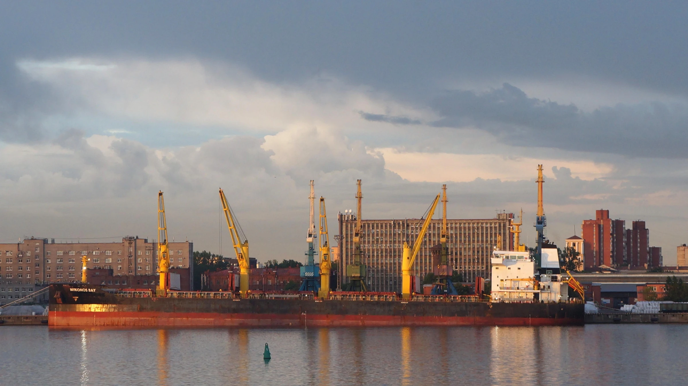
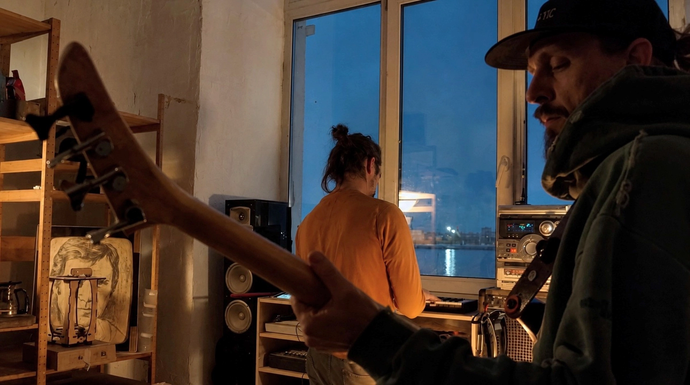
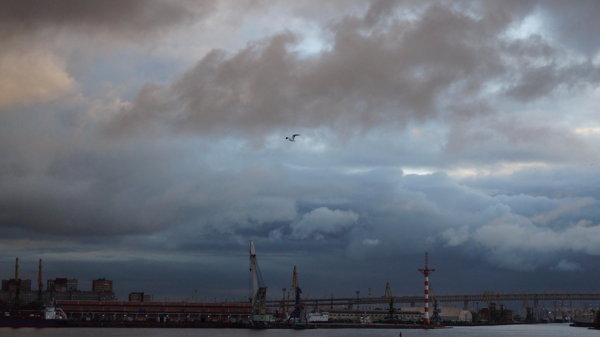

ПИЛИМ
· Мастерская звука и дерева в Севкабель-Порту Мастерская звука и дерева · в Севкабель-Порту

«Пилим и Пилим» — независимая мастерская, объединяющая ремесло, музыку и культуру совместного творчества. Мы пьем чай, создаём предметы из дерева, строим музыкальные инструменты, играем музыку и тем самым исследуем то, как материалы, звук и люди могут вдохновлять друг друга.

Чайные принадлежности и другая красота из дерева разных пород.
Масло вместо лака.
Слышишь? — это дерево дышит.
Каждая поверхность хранит след инструмента и времени.
Пауза — настройка слуха.
Завариваем, разливаем, молчим.
Слушаем воду,
стук пиал, дыхание залива.
Чаем занимается Хранитель пауз.
Посуда — ручная работа, можно заполучить.



· Осторожно!
За нашим окном — залив, корабли
и небо,
которое каждый день рисует новый фон.
Очень легко зависнуть
и забыть, зачем пришёл.

· Расписание мероприятий пока формируется.
Но вы уже можете присоединиться — оставьте свою почту,
и мы напишем вам первыми, когда объявим даты новых
мастер-классов, джемов и других событий.
А пока можно заглянуть в наши соц. сети.
Там мы делимся новостями мастерской, рассказываем
о будущих встречах и показываем, чем живёт
«Пилим и Пилим».